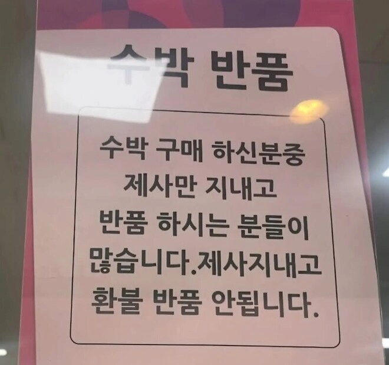

K제사 근황.jpg
댓글
제사지내는 집은 가난할 확률이 높다
케바케다....내가 봤을땐 대체적으로 사업하는분들이 풍수 조상 무덤 이런거 더 챙기더라
내가 아는 금수저 집안 전부 조상 살뜰하게 모심
재벌집에서도 제사 지내는데? 오히려 찐 금수저들은 제대로 모심
진짜 조상 잘둔 사람들은 명절때 제대로 제사하고 평소에 해외여행다님
성급한 일반화의 오류
자랑거리가 제사 안지내는거 밖에 없나바
그 옛날부터 돌아다니는 네이버 일침댓글봤나보구나
거렁뱅이들
진짜 마트 반품 거지들 상상을 초월함 고기 1kg 사서 반 먹고 나머지 상했다고 반품하는 거 봄 웃긴 건 마트는 반품 웬만하면 다 해 주는 게 원칙 ㅋㅋ
어차피 마트도 납품업체한테 반품침 ㅋ
저럴거면 제사 왜지냄? 거렁뱅이들만 제사한다는게 진짜네
조상한테 수박 한덩어리도 못사드릴 정도면 제사 안지내는게 맞지
조상 득본게 없는데 ㅋㅋ
코스트코에서 사면 환불해주냐?
제사지낼때 윗부분 깍지 않나
씹거지련들 왤캐 많냐 ㅋㅋ
아니 걍 먹어 뭘 반품을 해 ㅋㅋㅋㅋㅋㅋ
그지새끼들은 이상한걸로 존나 부지런하다
장난하나 제사상에 수박을 뚜껑도 안따고 올려? 장난하나 그럴거면 제사를 지내지말라고 ㅋㅋㅋㅋ
이유없는 환불은 절대 받아주지 않아야 하는데 저거 제대로 돈주고 사는 사람들이 피해보는거임
소-중국
가끔씩 말도안되는 안내문, 경고문 보면 이런사람이 있다고? 싶다가도 실제사례보면 납득이됨 ㅋㅋㅋㅋ